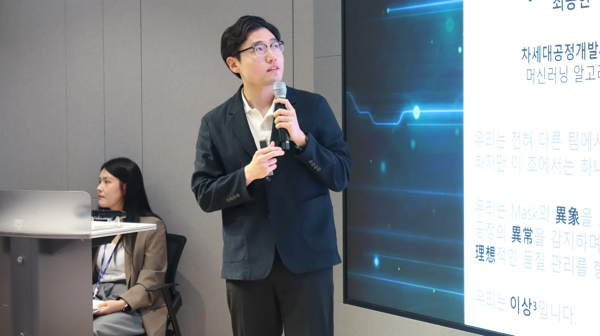

INSIDE THE OFFICE
2024. 09 — PRESENT
최승현의
요즘.
회사 안에서는 AI로 반도체 현장의 다음 장면을 만들고,
회사 밖에서는 잘 먹고, 꾸준히 움직이며 삶의 여백을 찾는 중입니다.

연구가
SCENES, LATELY
요즘의
장면들
사진을 눌러 천천히 둘러보세요. 키보드 방향키와 모바일 스와이프도 지원합니다.
SH
최승현입니다.
2024년 9월부터 삼성전자 DS부문 반도체연구소 차세대공정개발팀 AI분석그룹에서 일하고 있습니다. 품질시스템연구실에서 배운 철학을 반도체 연구 현장에 전하고, 기술이 실제 업무의 변화로 이어지는 순간을 만드는 데 관심이 많습니다.